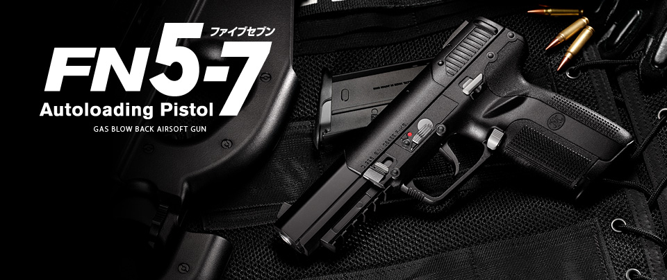

サバゲーにおいてのハンドガン

メーカーやものによっては、サイトがつけられないものがあり狭い室内等でのゲームでは小さい分小回りが利くが、屋外ゲームでは規定により飛距離の短さなどがあり時と場所を選ぶ必要がある。平均で初速度は６０～８０弱ほどあり距離が近くない限り基本的にはけがは避けられる。基本的には、０．２ｇのBB弾が使用されることが多い。ハンドガンといってもエアコキ、電動、ガスの三種類があり値段は左から５０００円弱、１万円弱、１万円前後であり私はガスのみを愛用している。
ホーム